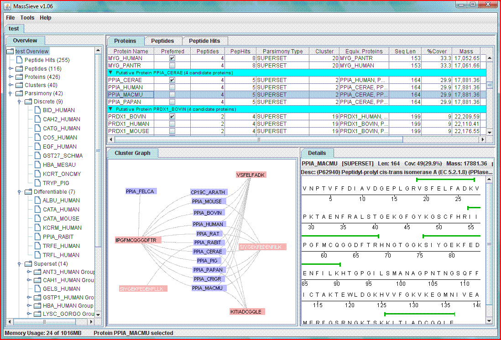

Welcome to MassSieve distribution website!
MassSieve is a free tool for parsing MS/MS search engine results. It allows you to combine the results of several searches into a single experiment and parsimoniously seperate the results. Many different experiments can be loaded and the results can be compared and contrasted.

Features
- Written in Java, tested on Win32, OS X, and Linux.
- Search Engines:
- Filter by:
- Cutoff score (per search engine)
- Number and type of search engine
- Number of scan per peptide
- Number of peptides per protein
- Percent protein coverage
- View by:
- Peptide hits
- Peptides
- Proteins
- Clusters (all related peptides and proteins)
- Parsimony